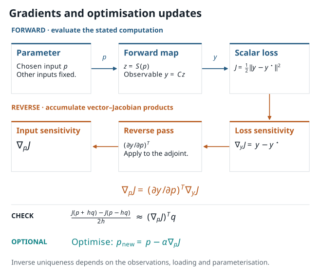

6. Differentiable Mechanics and Inverse Parameter Discovery#
{kind=link}

Figure 6.1 In differentiable mechanics, parameters flow through the forward solver graph to produce an observation. Reverse-mode automatic differentiation computes the sensitivity gradient, which guides an optimizer to discover unknown physical properties.#
6.1. The Detective Story: Solving Inverse Problems with Differentiable Mechanics#
Imagine you are an engineer in a materials testing laboratory. You place a specimen of an unknown advanced alloy into a tensile testing machine, apply incremental stretch, and record the reaction forces and surface displacement fields using digital cameras (digital image correlation).
Now comes the fundamental scientific puzzle: What are the true underlying material properties—such as Young’s modulus \(E\), Poisson’s ratio \(\nu\), or fracture toughness \(G_c\)—that gave rise to these experimental measurements?
In traditional engineering, solving this inverse problem required expensive brute-force guessing: pick a trial parameter, run a forward finite element simulation, see how far off the prediction is, and guess again.
With differentiable mechanics, the simulation itself calculates the road map!
Because our finite element equations are assembled into a differentiable computational graph in PyTorch, reverse-mode automatic differentiation (autograd) uses the chain rule to backpropagate the error between simulation and observation all the way back to the input material parameters:
With this exact sensitivity gradient in hand, standard optimization algorithms (torch.optim.Adam or L-BFGS) can systematically navigate the parameter landscape and pinpoint the true material properties.
6.2. Formulating the Forward and Inverse Maps#
Let \(p\) denote the physical parameter we wish to discover (for example, Young’s modulus \(E > 0\)). The forward computational graph maps the parameter to a physical state, and then to a measurable observation:
With a target observation \(y^\star\), an illustrative least-squares objective is
This objective introduces the chain rule, tensor shapes, and optimisation bookkeeping. Parameter identifiability depends on the observations, loading conditions, and chosen parameterisation.
Before calling a gradient routine, write down:
the parameter and its units or nondimensionalisation;
the geometry, loads, and boundary conditions held fixed;
the observable \(y\) and the target \(y^\star\);
every mathematical operation from \(p\) to \(J\); and
the stopping tolerances and convergence criteria of any iterative solver.
These choices define the mathematical map being differentiated.
6.3. Three ways to obtain a sensitivity#
6.3.1. Finite differences#
A directional central difference uses a chosen direction \(q\) and step \(h\):
It is simple and independent of the autodiff implementation, which makes it valuable as a check. It also has a step-size trade-off: a large \(h\) includes nonlinear curvature, while a very small \(h\) can suffer cancellation and solver tolerance effects.
6.3.2. Unrolled automatic differentiation#
If a program executes a fixed differentiable sequence of operations, reverse mode can differentiate the sequence actually run. For example, unrolling \(K\) iterations gives
The derivative is of that truncated algorithm. If \(K\) changes by parameter value or a non-differentiable branch is taken, the interpretation must mention it. Memory cost can also increase when many states are retained for a reverse pass.
6.3.3. Implicit differentiation#
Suppose a converged state is defined by a residual
Under appropriate differentiability and nonsingularity assumptions,
In practice, an adjoint formulation often avoids forming this inverse explicitly. This method differentiates a local equation for a converged state. Differentiating the iterations gives the derivative of the executed algorithm. Inequality constraints, active-set changes, damage irreversibility, and non-smooth constitutive choices require particular care.
6.4. Follow the gradient one update at a time#
The worked section below expands the chain rule into local derivatives, backward-propagated sensitivities and the sum of all uses of a shared parameter. Work through the three scalar updates before interpreting an autograd call as a derivative of a fracture calculation.
6.5. A bounded parameterisation#
An unconstrained update can turn a positive material multiplier negative. One simple way to enforce a scalar interval is to optimise an unconstrained variable \(\theta\) and map it to
The chain rule gives
This construction enforces bounds but introduces saturation near the limits: the sigmoid derivative becomes small. The choice of transform therefore affects the conditioning of the optimisation problem.
6.6. A minimal inverse experiment#
For a first experiment, choose one parameter, one geometry, one loading protocol, and one stated observable. For example:
define a reference parameter \(p_{\mathrm{ref}}\) within a known interval;
compute a synthetic observation \(y^\star=y(p_{\mathrm{ref}})\) using a documented forward map;
start from a different \(\theta\) and map it to \(p(\theta)\);
compute \(J(\theta)\) and a gradient;
take a bounded update; and
report the parameter trajectory, loss, observable mismatch, and a derivative check.
This controlled recovery uses synthetic observations from the same forward model and specified noise assumptions. Experimental recovery additionally requires assessment of measurement noise and model discrepancy.
6.7. Hands-On Lab: Differentiating Mechanics and Parameter Recovery#
In the accompanying computational lesson, you will implement a complete differentiable mechanics problem in PyTorch:
Forward Solution: Solve deformation in a one-dimensional elastic bar under tensile loading.
Derivative Verification: Compute sensitivities of an observation with respect to the elastic modulus using analytical formulas, automatic differentiation (
loss.backward()), and central finite differences.Inverse Identification: Use gradient descent to automatically recover the unknown ground-truth stiffness from synthetic displacement measurements.
Hands-On Tutorial: Lab 03 (Differentiable Mechanics & Inverse Recovery)
Ready to try this in practice?
Explore the interactive tutorial: Lab 03: Differentiable Mechanics & Inverse Parameter Identification.
You can read through the worked autograd graph and parameter recovery trajectories directly here in the book, or run it interactively in Google Colab with one click:
6.8. Directional Derivative Verification#
To verify that reverse-mode automatic differentiation yields the true gradient, we compare the directional derivative obtained from autograd with a numerical central difference:
We evaluate this comparison across several perturbation step sizes \(h\). A relative error metric measures consistency:
When the step size \(h\) is in a well-balanced range (typically \(10^{-4}\) to \(10^{-6}\) for float64), the relative difference is close to machine precision, confirming that autograd correctly traverses every operation in the forward computational graph.
Interpreting Gradient Verification
A close match between autodiff and finite differences confirms that the computational graph correctly implements the intended mathematical derivative. In inverse problems, this verified gradient provides the foundation for stable, efficient optimization.
6.9. Why inverse recovery can be difficult#
Several different parameter fields can produce similar limited observations. This non-uniqueness can arise from insufficient loading diversity, a coarse observable, parameter correlation, regularisation choices, or weak sensitivity of the forward response. A decreasing loss should therefore be reported with the parameter path, held-out or alternative observables where available, and the stated prior/bounds.
For a spatial parameter field \(p(x)\), an additional smoothness term might be
This selects smoother solutions and changes the inverse problem. The coefficient \(\beta\) controls the balance between fitting observations and penalising spatial variation.
6.10. Exercise: interpret a gradient result#
An implementation reports a small central-difference discrepancy for one direction \(q\) at a parameter \(p\). Which conclusions below are supported?
The local scalar derivative is consistent with this finite-difference check.
The inverse problem has a unique solution.
The phase-field model is calibrated to a real specimen.
The automatic-differentiation graph likely connects the chosen parameter to the stated loss along this tested path.
Solution
Conclusions 1 and 4 follow for the tested step, direction, parameter and forward solve. Conclusions 2 and 3 require additional studies: identifiability requires a study of observations, parameters, and priors; calibration requires suitable experimental comparison and uncertainty treatment.
The computational lesson applies this reasoning to a one-dimensional elastic bar with a positive log-modulus parameterisation and the displayed scalar observable.
6.11. Sources for this chapter#
The PyTorch autograd documentation and JAX automatic-differentiation guide describe their respective differentiation systems. For a finite-element example of implicit gradient computation, see the JAX-FEM gradient example.